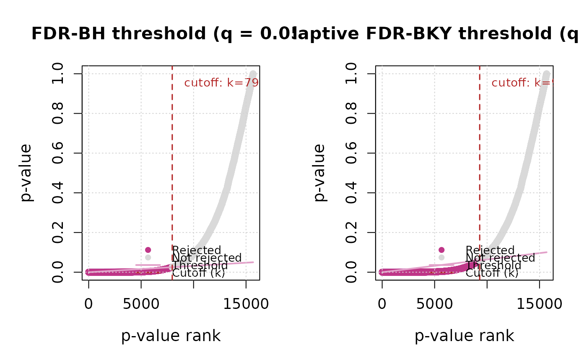

Two side-by-side panels, one for FDR-BH and one for FDR-BKY, each
showing the sorted p-values against their step-up rejection threshold.
Following Benjamini & Hochberg (1995), p-values are shown in increasing
order as p_(i): the x-axis is the rank i (from 1 to the total
number of valid cells m), and the y-axis is the ordered p-value
p_(i) itself.
Arguments
- result
Output of
fdr_correction()(must include BKY, sincethreshold_datais only populated then).- path
Character or
NULL. If supplied, a PNG is written there.
Details
In the left panel, the line is the BH linear step-up threshold,
p_(i) = (i / m) * q; in the right panel, it is the adaptive BKY
threshold, p_(i) = (i / m) * q_star, which uses q_star – rescaled
from q using the estimated proportion of true nulls, pi0_hat = m0_hat / m – rather than a fixed q. Every rank at or before the
final cutoff is drawn in blue (rejected),
whereas ranks after it are drawn in grey (not rejected). The
dashed vertical line marks the cutoff rank k: the step-up rule
rejects every hypothesis from rank 1 up to k, not just the
individual points that happen to fall under the line – k is the
last point (in increasing p order) still below the threshold, and
everything at or before it is rejected even if a point in between sits
slightly above the line by chance. Because BKY's threshold adapts to
pi0_hat, it typically sits above BH's fixed-slope line whenever
pi0_hat < 1 – i.e. whenever some cells are estimated to have a real
trend – which is why the right panel usually shows more rejections
than the left one for the same nominal q.
Function type: Reporting/derived function – summarises or
plots the output of
another function; it does not compute any new statistic. Not
exported – called internally by report = TRUE, and reachable
from outside the package via plot(x, which = "threshold").
References
See fdr_bh() and fdr_bky() for the full reference list and the
reasoning behind each citation.
Benjamini, Y., & Hochberg, Y. (1995) Controlling the False Discovery Rate: A Practical and Powerful Approach to Multiple Testing. Journal of the Royal Statistical Society: Series B, 57, 289-300. doi:10.1111/j.2517-6161.1995.tb02031.x
Benjamini, Y., & Yekutieli, D. (2001) The control of the false discovery rate in multiple testing under dependency. Annals of Statistics, 29(4), 1165-1188. doi:10.1214/aos/1013699998
Detailed graphical interpretation of this exact figure, including a
simulation study of the stability of pi0_hat across resamples:
Gutiérrez-Hernández, O., & García, L.V. (2025) Implementing the Linear Adaptive False Discovery Rate Procedure for Spatiotemporal Trend Testing. Mathematics, 13(22), 3630. doi:10.3390/math13223630
See also
Other FDR correction functions:
fdr_bh(),
fdr_bky(),
fdr_by(),
fdr_comparison_barplot(),
fdr_correction(),
fdr_direction_plot(),
fdr_direction_summary(),
fdr_pvalue_histogram(),
fdr_significance_maps(),
fdr_summary()
Examples
r <- read_ordered_stack(example_data("vhp_ndvi"))
#> Temporal order auto-detected with pattern '(19[0-9]{2}|20[0-9]{2})'.
#> Temporal order verification (mandatory, cannot be skipped):
#> stack_position detected_number file
#> 1 1982 VHP_SMN_annual_ndvi_1982.tif
#> 2 1983 VHP_SMN_annual_ndvi_1983.tif
#> 3 1984 VHP_SMN_annual_ndvi_1984.tif
#> 4 1985 VHP_SMN_annual_ndvi_1985.tif
#> 5 1986 VHP_SMN_annual_ndvi_1986.tif
#> 6 1987 VHP_SMN_annual_ndvi_1987.tif
#> 7 1988 VHP_SMN_annual_ndvi_1988.tif
#> 8 1989 VHP_SMN_annual_ndvi_1989.tif
#> 9 1990 VHP_SMN_annual_ndvi_1990.tif
#> 10 1991 VHP_SMN_annual_ndvi_1991.tif
#> 11 1992 VHP_SMN_annual_ndvi_1992.tif
#> 12 1993 VHP_SMN_annual_ndvi_1993.tif
#> 13 1994 VHP_SMN_annual_ndvi_1994.tif
#> 14 1995 VHP_SMN_annual_ndvi_1995.tif
#> 15 1996 VHP_SMN_annual_ndvi_1996.tif
#> 16 1997 VHP_SMN_annual_ndvi_1997.tif
#> 17 1998 VHP_SMN_annual_ndvi_1998.tif
#> 18 1999 VHP_SMN_annual_ndvi_1999.tif
#> 19 2000 VHP_SMN_annual_ndvi_2000.tif
#> 20 2001 VHP_SMN_annual_ndvi_2001.tif
#> 21 2002 VHP_SMN_annual_ndvi_2002.tif
#> 22 2003 VHP_SMN_annual_ndvi_2003.tif
#> 23 2004 VHP_SMN_annual_ndvi_2004.tif
#> 24 2005 VHP_SMN_annual_ndvi_2005.tif
#> 25 2006 VHP_SMN_annual_ndvi_2006.tif
#> 26 2007 VHP_SMN_annual_ndvi_2007.tif
#> 27 2008 VHP_SMN_annual_ndvi_2008.tif
#> 28 2009 VHP_SMN_annual_ndvi_2009.tif
#> 29 2010 VHP_SMN_annual_ndvi_2010.tif
#> 30 2011 VHP_SMN_annual_ndvi_2011.tif
#> 31 2012 VHP_SMN_annual_ndvi_2012.tif
#> 32 2013 VHP_SMN_annual_ndvi_2013.tif
#> 33 2014 VHP_SMN_annual_ndvi_2014.tif
#> 34 2015 VHP_SMN_annual_ndvi_2015.tif
#> 35 2016 VHP_SMN_annual_ndvi_2016.tif
#> 36 2017 VHP_SMN_annual_ndvi_2017.tif
#> 37 2018 VHP_SMN_annual_ndvi_2018.tif
#> 38 2019 VHP_SMN_annual_ndvi_2019.tif
#> 39 2020 VHP_SMN_annual_ndvi_2020.tif
#> 40 2021 VHP_SMN_annual_ndvi_2021.tif
#> 41 2022 VHP_SMN_annual_ndvi_2022.tif
#> 42 2023 VHP_SMN_annual_ndvi_2023.tif
 #> Stack built: 42 layers, 146 x 338 cells.
#> >> [read_ordered_stack()] elapsed: 0.09 s
trend <- trend_test(r, report = FALSE, verbose = FALSE)
fdr_result <- fdr_correction(trend$stats$p, report = FALSE, verbose = FALSE)
# See ?fdr_threshold_plot for what each axis/line/colour means --
# the ordered p-values against the BH/BKY rejection thresholds.
sptrends:::fdr_threshold_plot(fdr_result)
#> Stack built: 42 layers, 146 x 338 cells.
#> >> [read_ordered_stack()] elapsed: 0.09 s
trend <- trend_test(r, report = FALSE, verbose = FALSE)
fdr_result <- fdr_correction(trend$stats$p, report = FALSE, verbose = FALSE)
# See ?fdr_threshold_plot for what each axis/line/colour means --
# the ordered p-values against the BH/BKY rejection thresholds.
sptrends:::fdr_threshold_plot(fdr_result)
